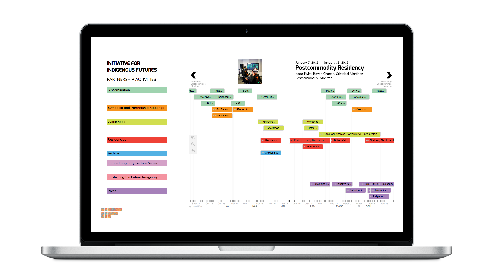

Initiative For
Indigenous Futures Timeline
2016
Website
The timeline works to document all of the research activities done by the members of the Initiative for Indigenous Futures, including artworks, workshops, symposia and press. This encompasses all research activities from the start of the grant, 2014, and is still in use today (2018). Made from a modified version of Northwestern University's Knight Lab Timeline.js project. This interactive version built for Obx allows users to select custom views to see which research activities are in place over what time period. It also allows custom features for the lab itself, with presentation mode which allows the presenter of the timeline to leaf through the items using the arrow keys.
Process booklet →
